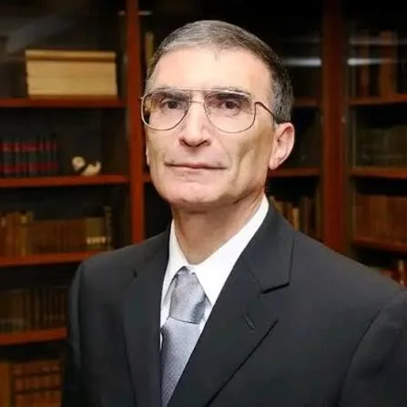

İstanbul Üniversitesi Tıp Fakültesi'nden mezun olduktan sonra ABD'ye giderek doktorasını tamamlamıştır.
Hücrelerin hasar gören DNA'ları nasıl onardığını haritalandırdığı için 2015 yılında Nobel Kimya Ödülü'nü kazanmıştır.